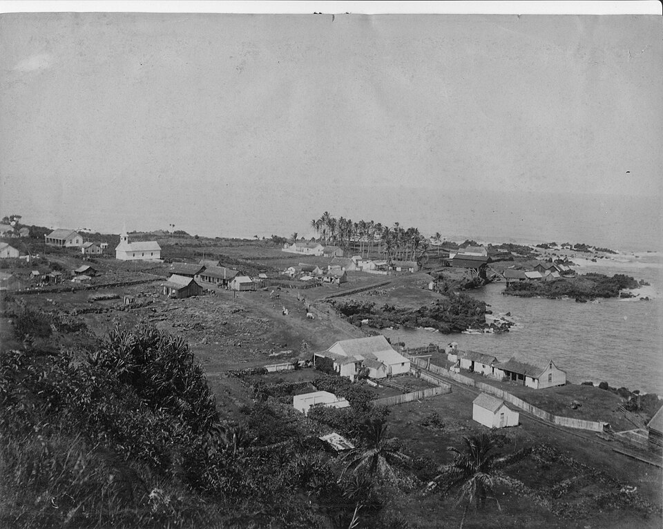

Laupāhoehoe
Place: Laupāhoehoe, Hāmākua District, Hawaiʻi Island
Type: Coastal village and historic peninsula
Namesake: Laupāhoehoe, meaning "leaf or tip of smooth lava," describing the flat lava peninsula extending into the Pacific Ocean
Story it tells: How a smooth lava peninsula became one of the Hāmākua Coast's most important canoe landings, plantation ports, and railroad communities before the devastating 1946 tsunami transformed the landscape and lives of those who called Laupāhoehoe home.

Laupāhoehoe sits along the rugged Hāmākua Coast of northeastern Hawaiʻi Island, where towering sea cliffs give way to a broad lava peninsula extending into the Pacific Ocean. The town takes its name from this distinctive landform. Laupāhoehoe is translated as "leaf of smooth lava" or "tip of smooth lava," which describes the broad, sloping pāhoehoe lava flows that spread outward into the sea. The peninsula is unique in that it is one of the area's few functional canoe landings, making it an important gathering place for generations of Native Hawaiians.
Long ago, before the arrival of Westerners, Laupāhoehoe served as a coastal village connected to the surrounding ahupuaʻa. Families fished, launched canoes from the protected lava shelves, and raised crops on the rolling slopes above the coast.
Oral traditions also associate Laupāhoehoe with the future high chief ʻUmi-a-Līloa, who is said to have lived in the area while in disguise. One famous legend recounts a surfing contest in which ʻUmi defeated his rival Paiea by skillfully using the waves breaking around the offshore rock Poluku, demonstrating that mastery of the ocean depended as much on knowledge as strength.
During the nineteenth century, Laupāhoehoe became increasingly important as Hawaiʻi's economy shifted toward commercial agriculture. Ships anchored offshore to load sugar, livestock, and other products from nearby plantations, while imported goods arrived for surrounding communities, mostly by train. Warehouses, homes, stores, and churches, slowly grew the once-small fishing village into one of the Hāmākua Coast's busiest settlements.
Sugar was the ultimate catalyst for growth in Laupāhoehoe. Plantation camps spread across the surrounding countryside as thousands of laborers from Japan, China, Portugal, the Philippines, Puerto Rico, Korea, and elsewhere arrived to work in the expanding sugar industry. Laupāhoehoe became closely tied to the Hawaiʻi Consolidated Railway, whose route along the Hāmākua cliffs connected Hilo with the region's mills and plantations. Trains carried sugar, passengers, livestock, and mail across towering steel trestles.
Life in Laupāhoehoe revolved around sugar, railroads, and the sea. Steamships continued to call at the landing, fishermen launched canoes from the lava shoreline, and plantation families built schools, churches, and businesses overlooking the point. The community prospered despite the isolation imposed by the steep Hāmākua cliffs.
Everything changed on the morning of April 1, 1946. A powerful earthquake in Alaska created a tsunami that raced across the Pacific Ocean. At the time, no centralized tsunami warning system existed, and residents had no idea of the danger approaching there town.
When the first unusual withdrawal of the ocean occurred, many people walked onto the exposed reef to investigate. Since it was April 1, some children believed the receding water was an April Fools' prank. Minutes later, enormous waves crashed onto the peninsula, sweeping away homes, railroad tracks, businesses, and nearly everything in their path. Laupāhoehoe School, located on the low-lying point, suffered one of the greatest tragedies in Hawaiʻi's history. Twenty students and four teachers lost their lives as the tsunami destroyed the campus. The disaster devastated the close-knit community and shocked the entire Territory of Hawaiʻi.
The destruction permanently altered Laupāhoehoe. Rather than rebuilding the school and much of the village on the vulnerable peninsula, residents relocated to higher ground overlooking the coast. The Hawaiʻi Consolidated Railway, never fully recovered from the widespread tsunami damage and ceased operations the following year.
The tragedy at Laupāhoehoe also had an impact on disaster preparedness throughout the Pacific. The 1946 tsunami exposed the need for an international warning network capable of detecting distant earthquakes and alerting communities before destructive waves arrived. Later that year, scientists established the Seismic Sea Wave Warning System—today known as the Pacific Tsunami Warning Center, creating a system that has since saved countless lives across the Pacific Basin.
Today, the quiet peninsula bears little resemblance to the bustling plantation village that once occupied its shoreline. Laupāhoehoe Point Beach Park sits over the lava point where families once lived, children attended school, trains arrived from Hilo, and how the town received its name. Memorials in the park commemorate those who died in the tsunami.
Laupāhoehoe's name continues to describe the same smooth lava peninsula that first attracted Hawaiian settlement centuries ago. Over time that landform became a canoe landing, a plantation port, a railroad stop, and the site of one of Hawaiʻi's greatest natural disasters. Today it stands as both a place of extraordinary beauty and a lasting reminder of the resilience of the community that rebuilt above the sea.